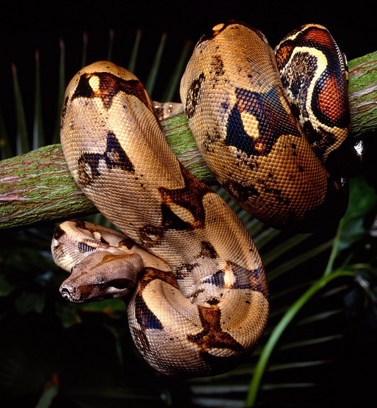

La Boa constrictor, conocida en la península de Yucatán como mazacuata, es una serpiente grande que pertenece a la familia Boidae. En gran parte de México, incluyendo Yucatán, Campeche y Quintana Roo, la especie más común es Boa imperator, que anteriormente se consideraba una subespecie de la boa constrictora. Estas serpientes son reptiles no venenosos que se caracterizan por su gran tamaño, su cuerpo musculoso y su capacidad para matar a sus presas mediante constricción. Son animales muy importantes dentro de los ecosistemas tropicales porque ayudan a mantener el equilibrio natural al controlar poblaciones de otros animales.
1. Clasificación científica
En conclusión, la Boa constrictor representada en la península de Yucatán principalmente por Boa imperator es una serpiente muy importante para el equilibrio de los ecosistemas tropicales. Aunque muchas personas le tienen miedo por su tamaño y fuerza, en realidad es un animal no venenoso que rara vez representa peligro para los seres humanos.
Su forma de cazar mediante constricción y su capacidad para alimentarse de roedores y otros pequeños animales ayudan a controlar poblaciones que podrían afectar la agricultura o transmitir enfermedades. Además, esta especie cumple un papel clave dentro de la cadena alimenticia, manteniendo el equilibrio entre diferentes especies del ecosistema. Sin embargo, las boas enfrentan amenazas como la pérdida de su hábitat, la deforestación y la captura ilegal. Por esta razón, es importante protegerlas y respetar su presencia en la naturaleza. Conservar a la boa de Yucatán no solo significa proteger a una especie de serpiente, sino también preservar la biodiversidad y la salud de los ecosistemas de la región.